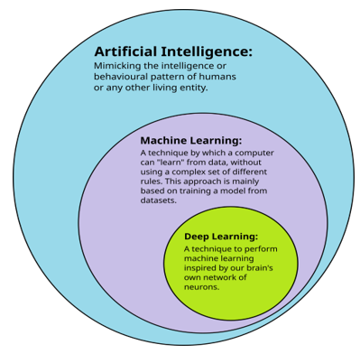
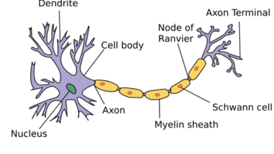

10. Artificial Intelligence, Machine Learning, Deep Learning
Info
- Nilufar Ismayilova, Rumiyya Alili, Ismayil Shahaliyev
- Nov 29 2025 / Dec 23 2025
Purpose of AI, Machine Learning and Deep Learning
Artificial Intelligence (AI) refers to the field concerned with building computer systems that exhibit intelligent behavior. An AI system is one that can reason, plan, make decisions, solve problems, or act purposefully in an environment in pursuit of goals. The defining feature of AI is what the system does, not how it is implemented. AI systems do not need to learn from data: classical rule-based expert systems, symbolic logic engines, search and planning algorithms, and game-playing systems based on handcrafted rules are all examples of AI. Learning may be used in AI, but it is not required.

By Original file: Avimanyu786; SVG version: Tukijaaliwa - File:AI-ML-DL.png, CC BY-SA 4.0, link
Machine Learning (ML) is a methodological approach in which systems learn patterns or functions from data instead of being programmed with explicit rules. The central idea of ML is performance improvement through experience. Given examples, the system infers statistical regularities that allow it to make predictions or decisions on new data. Many ML systems perform narrow tasks such as regression, classification, clustering, or recommendation without reasoning, planning, or goal-directed behavior.
Deep Learning (DL) is a specific class of ML methods based on multi-layer neural networks. DL is especially effective for perceptual tasks such as image recognition, speech processing, and natural language understanding because it can automatically learn features directly from raw inputs. DL is neither synonymous with intelligence nor with learning in general; it is a particular computational technique for large-scale function approximation within ML.
Note
An online clothing store can use AI to recommend outfits. If the store uses hand-written rules such as “if user clicks blue shirts, recommend jeans”, that is AI without ML. If the store learns recommendations from user behavior data (views, purchases, returns), that is ML. If the store also learns directly from product images (styles like “striped”, “oversized”, “casual”), that is DL.
Linear Regression Algorithm

Linear Regression is one of the simplest ML algorithms. We assume that there is a linear relationship between the observed data and the prediction we wish to make. In that case, we can model the relationship between two variables by finding a straight line that best fits the data. The goal is to predict an output \(\hat{y}\) based on an input \(x\) using the function:
Here \(x\) is the input, \(w\) is the weight (slope), and \(b\) is the bias (intercept). The task of ML is to find \(w\) and \(b\) that make predictions close to the ground truth labels. Learnable values of a model are called parameters. For comparison, GPT-3 has 175 billion parameters learned from a very large corpus of text.
Note
A company wants to predict exam score from study hours. It observes historical data such as (5 hours → 45), (10 → 55), (13 → 82), (20 → 94). With some choice of \(w\) and \(b\), the model can predict a reasonable score for 19 hours even if 19 never appeared in the data.
Root Mean Squared Error (RMSE)
When training an ML model, we need a way to measure how well it is performing. This measurement is called loss (error), and it tells us how far predictions are from actual values. The goal of training is to minimize this loss.
Consider this dataset:
| Study Hours (\(x\)) | Actual Score (\(y\)) | Predicted Score (\(\hat{y}\)) | Error (\(y-\hat{y}\)) |
|---|---|---|---|
| 5 | 50 | 45 | 5 |
| 10 | 55 | 55 | 0 |
| 20 | 90 | 95 | -5 |
If we average errors directly, positive and negative errors cancel: $$ (5 + 0 + (-5))/3 = 0 $$ A mean error of zero does not mean the model is perfect.
Exercise. How would you avoid negative values cancelling each other out during averaging?
A common solution is Mean Absolute Error (MAE): $$ MAE = (|5| + |0| + |-5|)/3 = 10/3 \approx 3.33 $$
Another is Mean Squared Error (MSE), which penalizes large errors more strongly: $$ MSE = (5^2 + 0^2 + (-5)^2)/3 = (25 + 0 + 25)/3 \approx 16.67 $$
Because MSE has squared units, we take the square root to return to original units: $$ RMSE = \sqrt{MSE} = \sqrt{16.67} \approx 4.08 $$
Artificial Neural Networks
Artificial Neural Networks (ANNs) are inspired by how biological neurons process information. Artificial neurons pass numerical values forward through the network.

Structure of a typical neuron with Schwann cells in the peripheral nervous system (source: "Anatomy and Physiology" by the US National Cancer Institute's Surveillance, CC BY-SA 3.0, link)
{kind=link}
A single artificial neuron computes a linear combination of inputs and then applies a nonlinear activation function:
Using the sigmoid function: $$ \hat{y} = \frac{1}{1 + e^{-z}} $$
Sigmoid outputs values in \([0,1]\), which is often interpreted as a probability.

Funcs - Own work (CC0, link)

By Glosser.ca - Own work, derivative of File:Artificial neural network.svg, CC BY-SA 3.0, link
A neural network is a collection of neurons. In a multilayer perceptron, outputs of one layer become inputs to the next. Output layers can contain multiple neurons, each representing a different prediction.
Note
For digit recognition (0–9), a network can have 10 output neurons. Each output can be interpreted as a probability for one digit, and the model predicts the digit with the highest value.
Matrix Multiplication
Matrix multiplication is one of the most important operations in ML/DL because it is how neural networks transform information. A layer stores its weights in a matrix. Inputs are represented as vectors. A forward pass is largely a sequence of matrix–vector multiplications.
Because deep learning requires many large matrix operations, hardware that can perform parallel computation is valuable. This is why GPUs are widely used: they can perform thousands of small multiplications in parallel.
Note
If an input vector \(X\) has three features and the weight matrix \(W\) maps those features into three outputs, the output is \(Y = WX\). This same operation, scaled up to large dimensions, is repeated across layers and across millions of training examples.
Large Language Models (LLM)
Large Language Models (LLMs), such as GPT-based systems, are deep learning models trained on extremely large text collections. They learn statistical patterns of language and can generate text, answer questions, summarize documents, translate, and write code.
Most modern LLMs are based on the Transformer architecture. Its attention mechanism allows the model to relate each word to every other word in the input. This enables parallel processing and helps represent long-range dependencies.
Note
A customer-support LLM can be trained on past chat logs, troubleshooting guides, and manuals. When a user writes “my internet disconnects every hour”, the model uses attention to relate tokens like “internet”, “disconnects”, and “hour”, then generates a response by predicting likely next tokens conditioned on the full context.
AI is often treated as synonymous with deep learning. This is misleading. Deep learning is one tool within AI. Many AI systems use symbolic reasoning, search, and optimization without learning from data.
Examples include constraint satisfaction problems, minimax search in games, and reinforcement learning methods such as Q-learning. These approaches remain important in planning, scheduling, verification, and control.
Constraint Satisfaction Problems (CSP) and Backtracking
Constraint Satisfaction Problems (CSPs) require assigning values to variables so that all rules are satisfied. Each variable has a domain of allowed values. Constraints specify which assignments are permitted.
Backtracking explores assignments systematically. It assigns values step by step, checks constraints early, and reverses (backtracks) as soon as it detects a conflict. This avoids exploring entire branches of the search space that cannot lead to a solution.
Note
Sudoku can be solved by backtracking. Each empty cell must be assigned a number 1–9 while respecting row, column, and 3×3 grid constraints. If a choice violates a rule, the algorithm removes it and tries another value.
Minimax Algorithm
Minimax is used in two-player, turn-based games such as tic-tac-toe, chess, and checkers. One player chooses moves to maximize the outcome while assuming the opponent chooses moves to minimize it. The algorithm explores possible futures, assigns scores to outcomes, and selects the move that guarantees the best worst-case result.
Note
In tic-tac-toe, minimax can assign +1 to a forced win, 0 to a draw, and -1 to a forced loss. The algorithm chooses the move with the best guaranteed score, assuming the opponent plays perfectly.
Modern chess engines use minimax-style search with many enhancements. Stockfish is a leading open-source chess engine and uses strong search methods, now also combined with neural network evaluation after the rise of AlphaZero.
Reinforcement Learning
Reinforcement Learning (RL) is a branch of AI where an agent learns by interacting with an environment. The agent takes actions, observes outcomes, and receives a numerical reward or penalty. Over time, it learns a policy that maximizes long-term reward by balancing exploration and exploitation.
Key concepts:
- Agent: the learner (robot, program, game player)
- Environment: what the agent interacts with
- Action: what the agent can do
- Reward: feedback signal
- Policy: the strategy the agent learns
Note
A robot can learn to walk by trial and error. Actions that keep it balanced give positive reward, actions that make it fall give negative reward. Over many interactions, it learns movement patterns that reliably produce higher reward.
Additional Materials
- Linear Regression
- TensorFlow Playground
- TensorSpace Playground
- Tiktokenizer
- But what is a neural network? Deep learning chapter 1
- Machine Learning Explained in 100 Seconds
- Linear Regression in 3 Minutes
- AI vs ML vs DL vs Data Science - Difference Explained Simplilearn
- N-Queens - Backtracking - Leetcode 51 - Python
- Minimax: How Computers Play Games
- Matrix multiplication as composition Chapter 4, Essence of linear algebra
- Multiplying a matrix by a matrix Khan Academy
- Large Language Models explained briefly
- How I use LLMs
- Deep Dive into LLMs like ChatGPT
- Machine Learning Fundamentals: Bias and Variance
- How Cambridge Analytica Exploited the Facebook Data of Millions NYT
- AlphaGo - The Movie Full award-winning documentary
- AI Learns to Play Soccer (and breaks physics)